Open source SNMP tooling
A desktop SNMP browser, MIB editor and alert router.
One native binary for Windows, macOS and Linux. Walk devices over v1, v2c or v3, read conceptual tables as tables, edit MIBs with diagnostics that name the line, and route what matters to syslog, a webhook or your inbox.
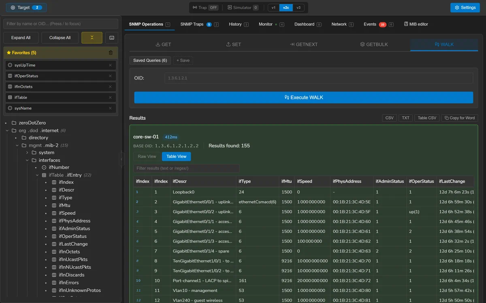
ifTable, pivoted into columns and split by INDEX.What it is
The whole loop, in one binary.
Find the OID, read it from the device, work out whether the number is a problem, tell somebody. Four jobs, four screens — no collector to deploy, no server to run, and no account to make.
-
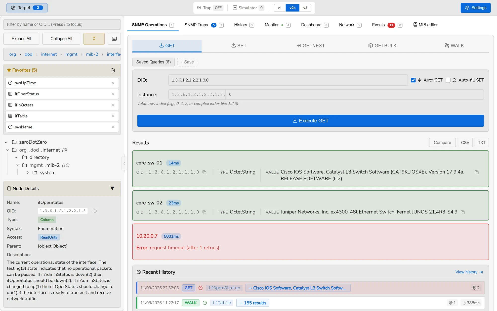
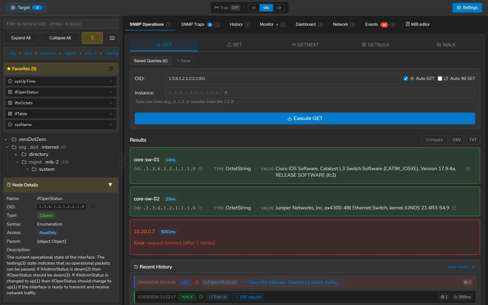
Find it
The MIB tree, searchable across name, OID, description and syntax.
-
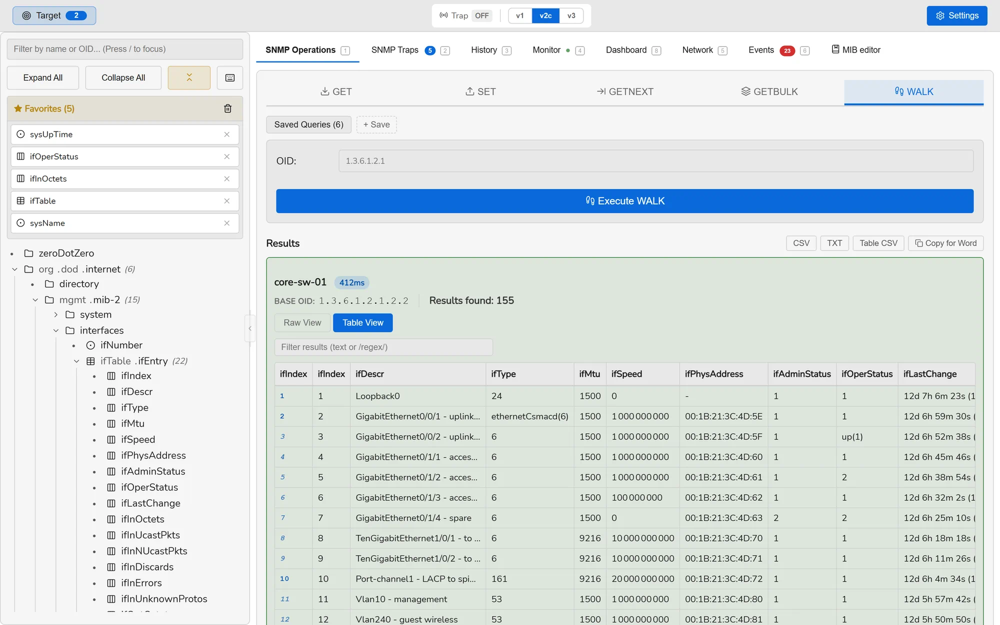
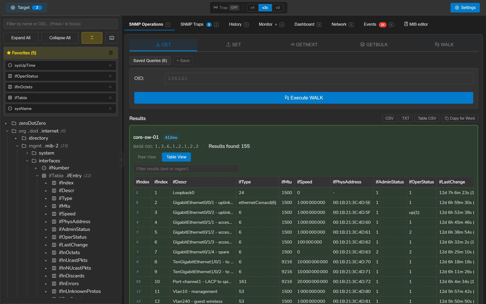
Read it
A walk of
ifTable, pivoted into columns and split by INDEX. -
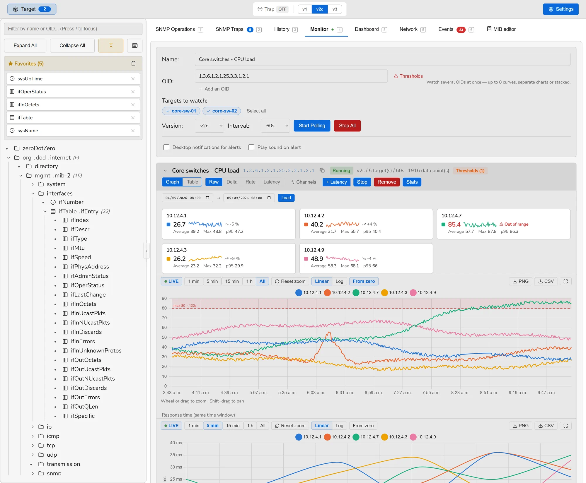
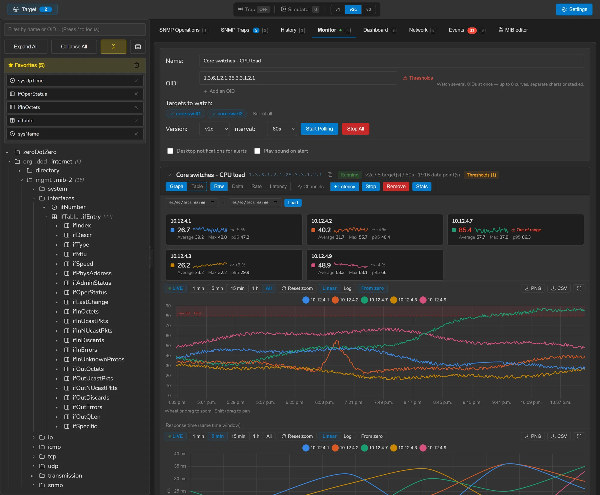
Judge it
Polled on a schedule, charted, and marked when it leaves its range.
-
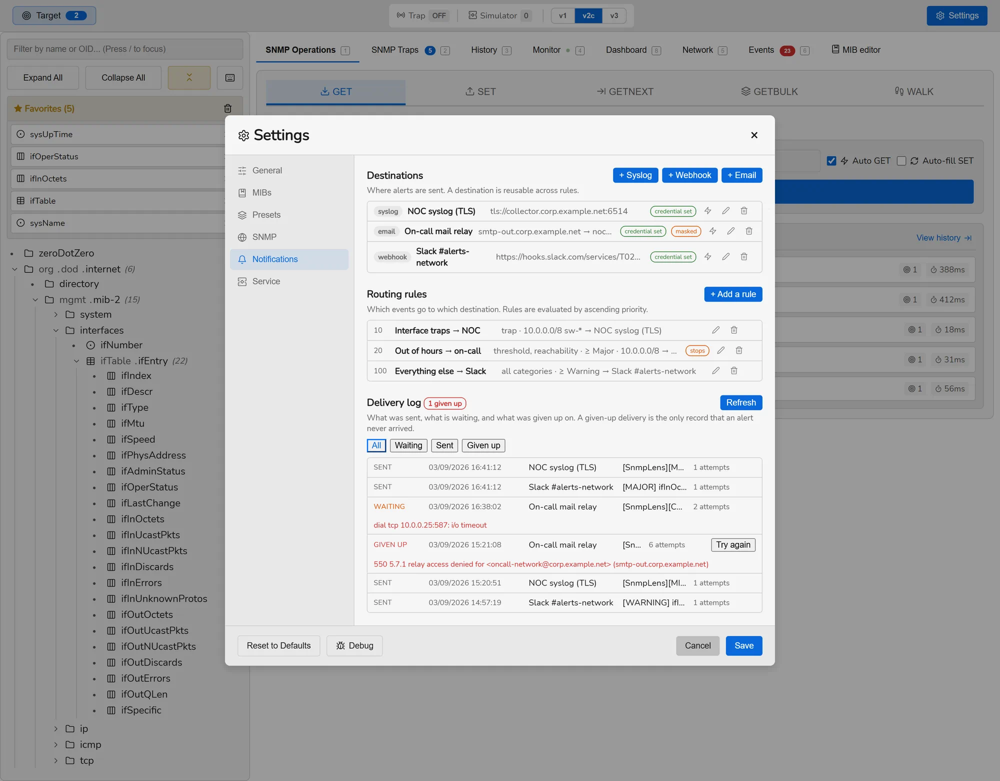
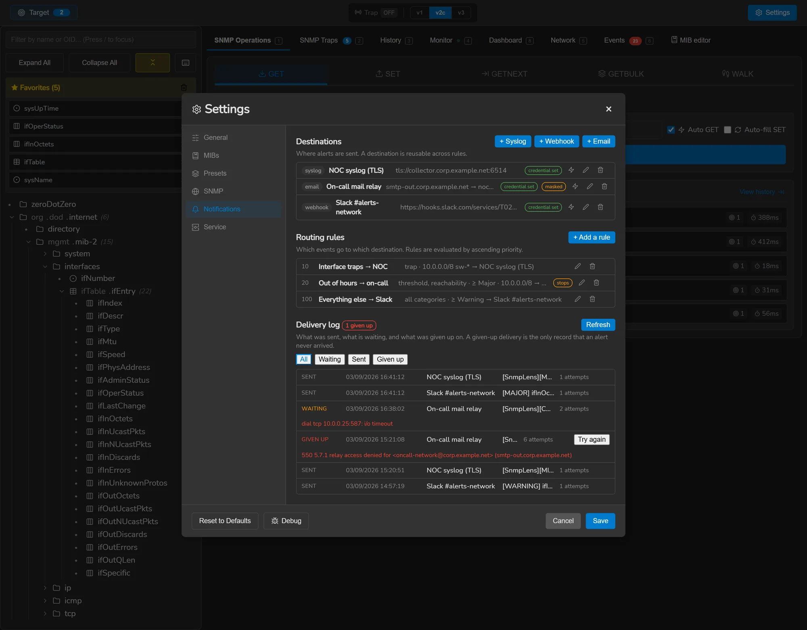
Tell somebody
Syslog, a webhook or email — with what the relay said when it refused.
The backend is Go, the interface is Svelte, and Wails compiles them into one native executable with no runtime to install. Its state — the MIBs you added and the history it recorded — lives in a directory you own, as files you can read. The only server SnmpLens contacts on its own is GitHub, to ask whether a newer release exists.
Capabilities
Seven workspaces
Each tab is a job, and the keyboard shortcut is in brackets.
Operations Ctrl 1
GET, SET, GETNEXT, GETBULK and WALK across many targets at once. Results arrive as
a flat list or as a real table — pivoted by column and split by INDEX, following
RFC 2578 §7.7, so tcpConnTable reads as four index fields rather than
one opaque sub-OID. Rows can be created and deleted where the MIB defines a
RowStatus.
Traps Ctrl 2
Receive v1, v2c and v3 traps on any port, with the trap OID resolved through your MIBs. Send traps to test a receiver, or acknowledged INFORMs — refused on v1 rather than quietly downgraded, because RFC 1157 has no such PDU.
History Ctrl 3
Every operation is kept with its results, so you can diff two walks side by side and see what changed on a device between Tuesday and now. Frequent queries can be saved and re-run.
Monitor Ctrl 4
Poll OIDs on a schedule and chart them as raw values, deltas, per-second rates or latency. Counter wraps are corrected and rates derived from the time that actually elapsed. The clock lives in the Go backend, so closing the window does not stop the session.
Discovery Ctrl 5
Scan a CIDR range for devices that answer SNMP, then ping and traceroute them. Both are pure Go and need no elevated privileges. IPv6 throughout, including link-local addresses with a zone.
Events Ctrl 6
One journal for everything worth remembering: traps received, thresholds opened and resolved, devices that stopped answering, deliveries that failed. Filterable, exportable, and the source for every alert that gets routed.
MIB editor Ctrl 7
Edit the MIBs in your own directory with syntax highlighting, live validation as you type, and a semantic pass that catches what loading does not — unknown types, duplicate OIDs, undefined INDEX objects. Standard MIBs are backed up before they are overwritten and can be restored.
Alert routing
Rules match events by category, severity, source, OID prefix or quiet hours, and send them to syslog (UDP, TCP or TLS per RFC 5425), a webhook, or email. Delivery goes through a durable outbox with retries, so an alert survives a relay being down and a window being closed.
Privacy
Anonymous Mode replaces every address, credential and hostname on screen with a stable alias, so a screenshot or a screen-share is safe. It is deliberately non-persistent: it is always off at startup, so it can never hide something you needed to see.
In motion
Four things a still cannot say
INDEX.INDEX.Try it
The whole application, in a browser tab.
Not a video and not a mock-up — the same Svelte interface the desktop build ships, with the SNMP backend replaced by fixtures. Walk a device, open a MIB, watch a chart, break a MIB and read the diagnostics. Nothing to install and nothing to configure.
Every device in it is fictional and nothing leaves your browser. The parts that ask the operating system for something a web page cannot have — installing a service, starting with your session, writing a MIB to disk, sending a real test notification — say so rather than pretending to have done it.
Under it
The parts that are easy to get wrong
A tool is judged by what it does when things are not fine.
A MIB that will not load tells you why
The underlying library answers “Could not load module at X” for a missing file, a PDF, a syntax error on line 412 and an unsatisfiable IMPORTS alike. SnmpLens recovers the real message and reports a stage — read, content, parse, imports, build, semantic — with the position, an excerpt with a caret, and the modules that could not be satisfied along with the symbols each was needed for.
It recognises the files people download by mistake: an HTML error page, a PDF, a zip, a UTF-16 file. All four otherwise arrive as the same sentence.
Credentials are not kept beside the data
Community strings and v3 passphrases are sealed with a key held by the operating system — DPAPI on Windows, the Keychain on macOS, a 0600 file on Linux — and never written next to the database. The settings screen names the backend actually in use rather than saying “encrypted”, because those three protect against different things.
Sealing that fails never falls back to writing plaintext, and never overwrites good ciphertext with a half-sealed object.
Updates are signed, not just downloaded
Every release ships a SHA-256 manifest and an Ed25519 signature over it. The application verifies the signature against a key compiled into the binary, then checks the asset against the now-authenticated manifest — the same model a Linux package repository uses. A build whose signature is missing refuses the update rather than applying it.
An alert that fails leaves a record
Deliveries are queued in a durable outbox and retried with backoff. Whether a failure is retried is decided by the protocol reply code — 4xx transient and 5xx permanent for SMTP, per RFC 5321 — never by searching the text a receiver wrote. A delivery finally given up on is kept and listed, because it is the only record that a notification never arrived.
Install
Get it running
Every asset, its checksum and the signature are on the download page, with instructions for verifying them. Building from source takes three commands — see contributing.
- Stars
- 0000
- Forks
- 000
- Open issues
- 00
- Last commit
- Loading
- Latest release
- v0.0.0
More of it
Screenshots
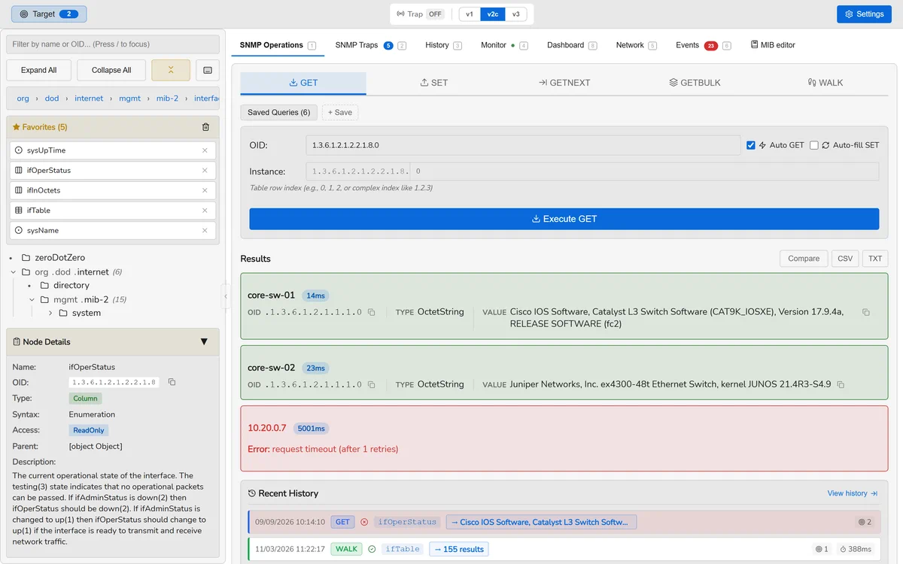
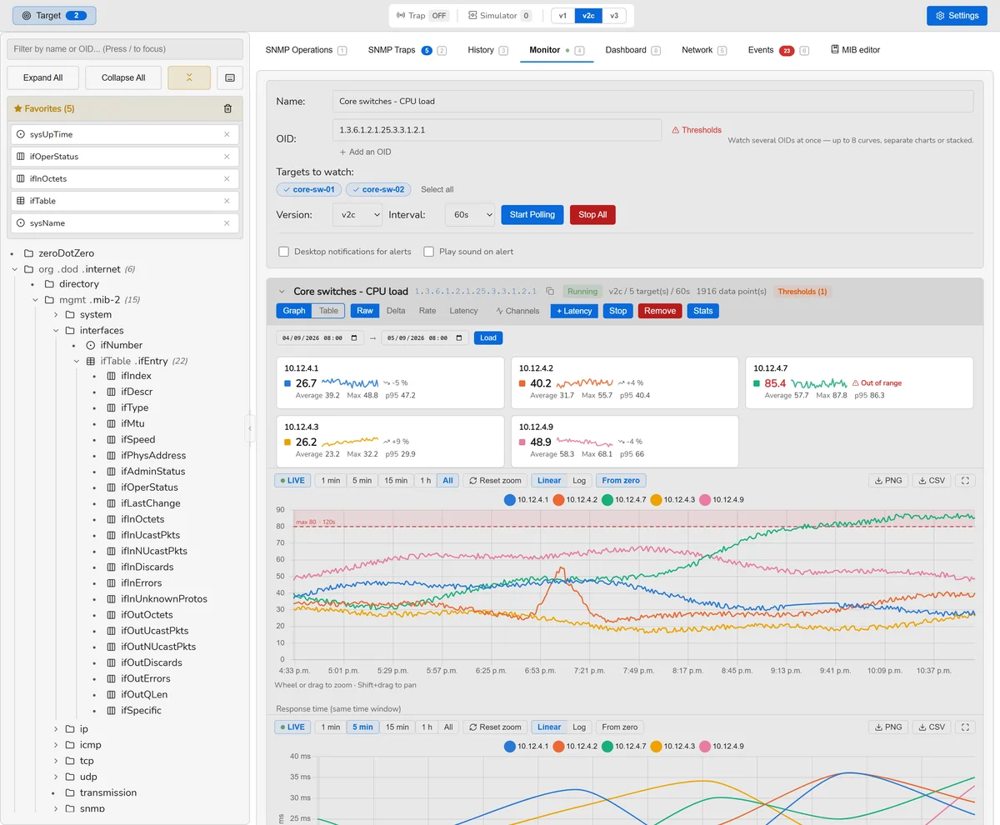
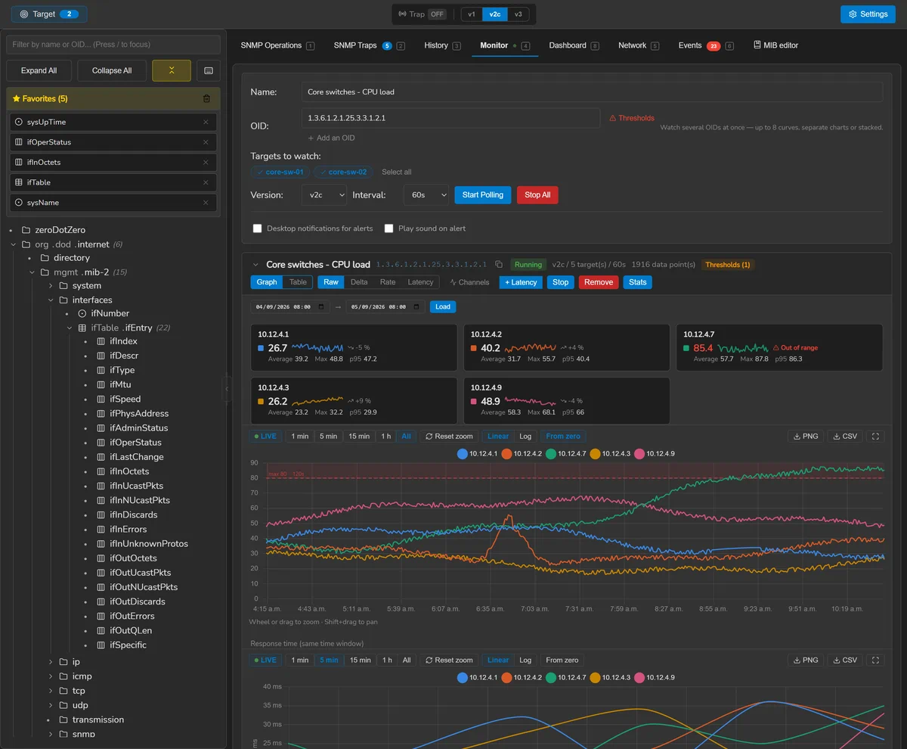
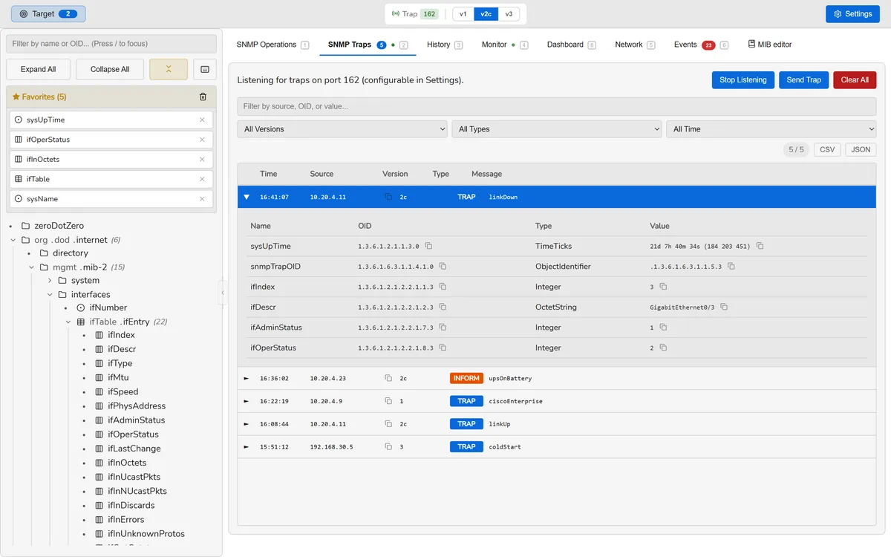
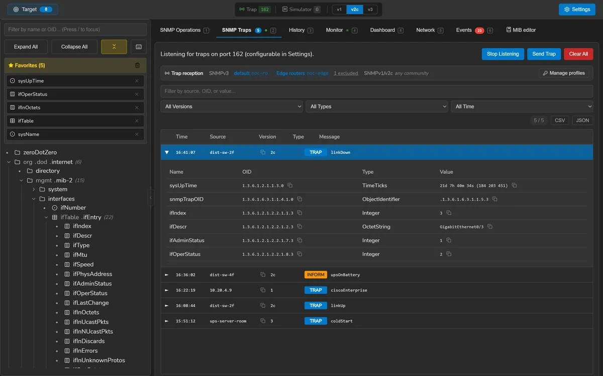
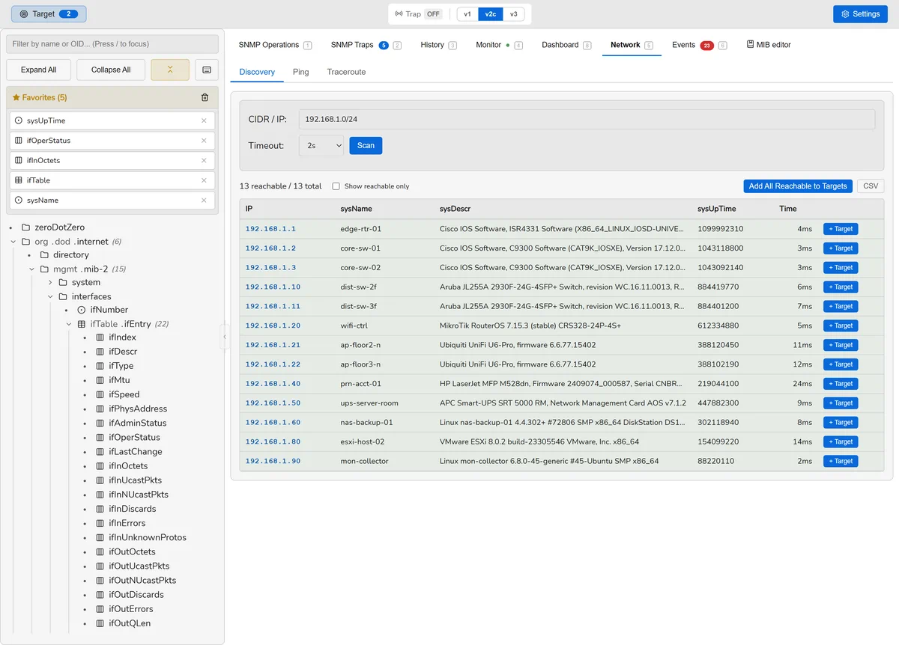
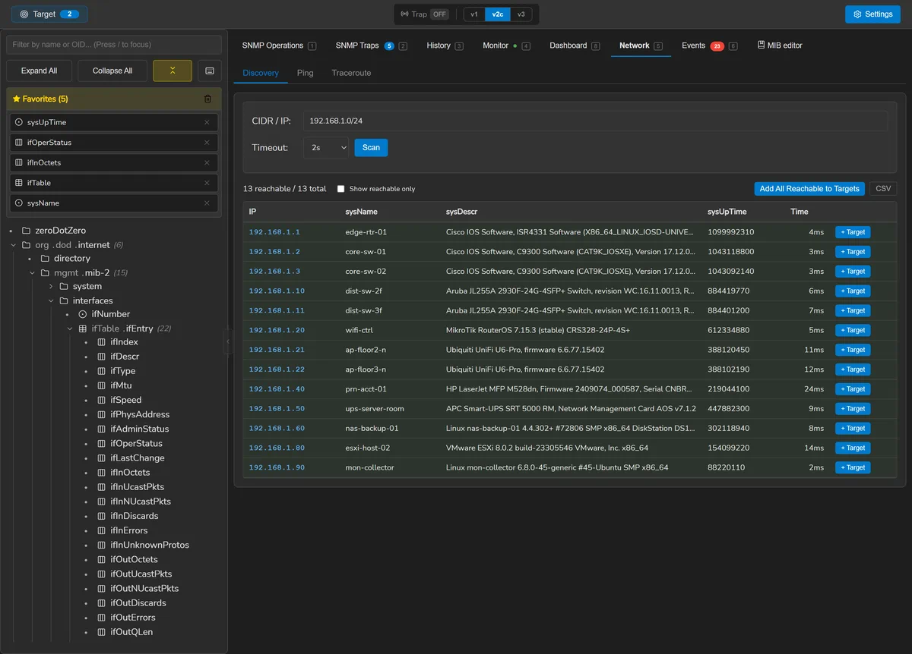
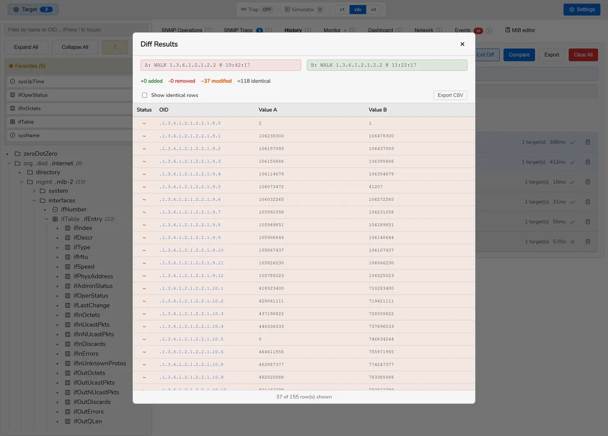
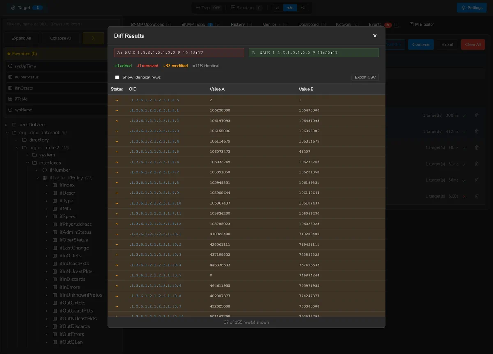
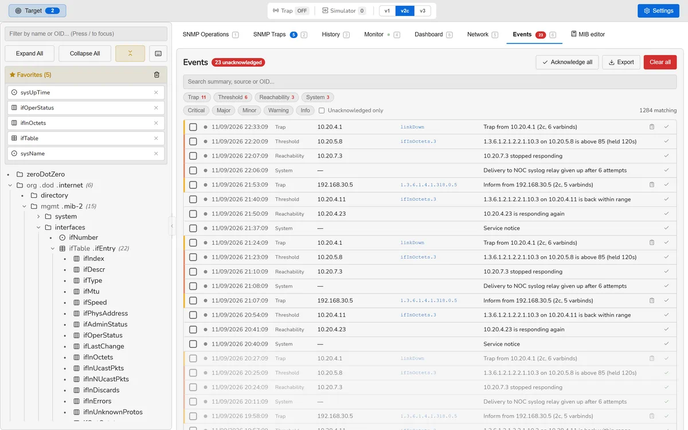
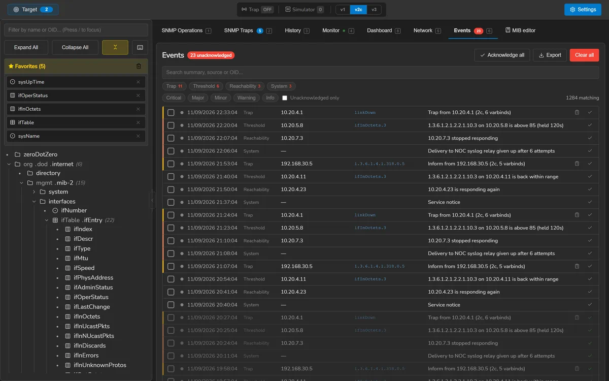
Every image here is generated from the real interface by
node tools/screenshots.mjs — the same components and stylesheet the
application ships, with the backend replaced by fixtures — so they cannot show a
layout the application does not actually produce, and they are regenerated rather
than retaken. The changelog is the authority on what
shipped when.